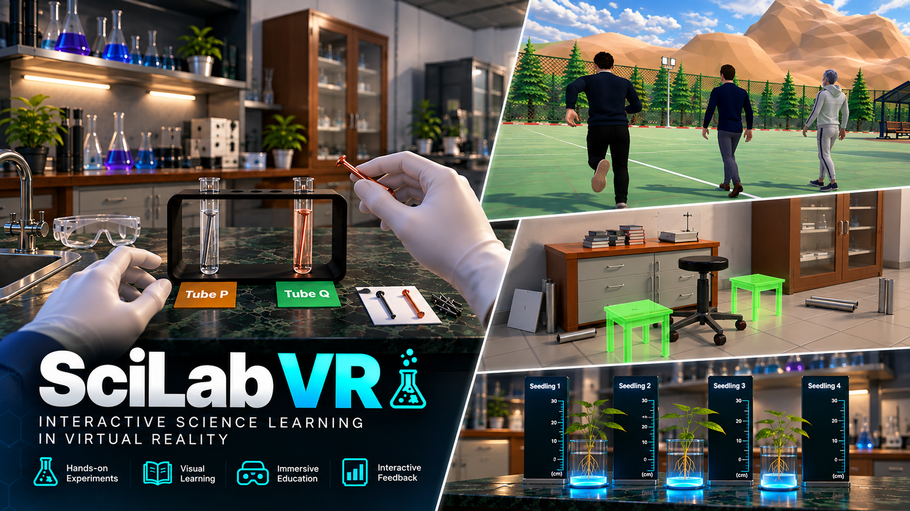
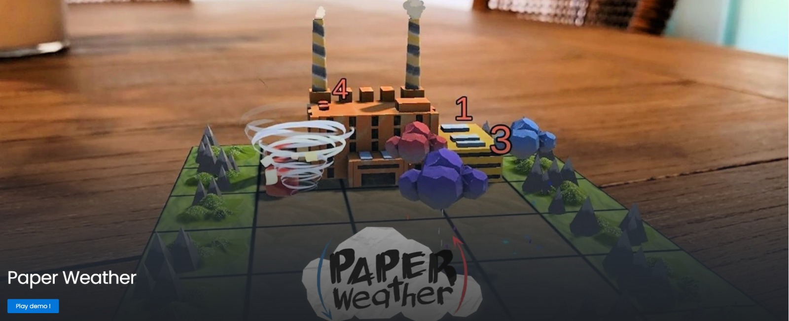

Building worlds
you can step into.
I'm Mohammad Tahmidul Hasan — a game and immersive-technology developer creating interactive experiences across VR, games and real-time 3D.
Explore work↓Selected
Projects
A collection of VR, game, simulation and interactive projects spanning research, education, training and entertainment.
Quest for
Everyday Heroes
Research-driven VR role-play supporting daily-life and communication skills for children with ASD.
Enter project ↗ Featured Immersive Experience
Featured Immersive ExperienceSciLab VR
Immersive VR learning for secondary-school science and physics education.
Enter project ↗
Educational XRMuseum /
Conservation Lab VR
VR museum experience for artifact inspection, conservation and preservation training.
Enter project ↗ Cultural Heritage XR
Cultural Heritage XRVR Offshore
Simulator
Immersive offshore VR training focused on interactive scenarios and hazard awareness.
Enter project ↗ Industrial Simulation
Industrial SimulationTune Protect
Onboarding
Gamified employee onboarding designed to make orientation more interactive and engaging.
Enter project ↗ Interactive Onboarding
Interactive OnboardingVelocity Rush
Fast-paced online multiplayer game built around competitive player interaction.
Enter project ↗ Multiplayer Gameplay
Multiplayer GameplayTraces of the
White Soul
2D platformer focused on responsive movement, level progression and gameplay flow.
Enter project ↗ 2D Platformer
2D PlatformerIn the Dark
Atmospheric horror environment built around tension and environmental storytelling.
Enter project ↗ Horror Environment
Horror EnvironmentBio-Medical
Park Malaysia
Interactive 3D visualization of a biomedical park and its spaces.
Enter project ↗ Real-time Visualization
Real-time VisualizationHybrid
Classroom
Interactive 3D classroom environments themed around different subjects.
Enter project ↗ Interactive Learning
Interactive LearningPaper Weather
Educational action game using weather powers to fight pollution and restore the environment.
Enter project ↗
Educational GameCode.
Design.
Immersion.
I work across development, research and creative production, combining programming with game design and immersive interaction to turn ideas into working experiences.
My work spans VR and XR development, gameplay systems, rapid prototyping, interactive 3D environments and educational experiences, with a continuing interest in AI and machine learning for immersive technology.
MSc in Computing (By Research) — viva completed with minor amendments, 2026
BSc in Computer Games Development — Asia Pacific University of Technology and Innovation, 2022.